You can use multiple engines on FME Flow to process multiple workspaces in parallel. For more information, see Job Orchestration with Automations or Getting Started with the Split-Merge Block.
After completing this lesson, you’ll be able to:
In this lesson, you will:
Parallel processing can improve performance on high-end machines by running multiple actions simultaneously as separate processes. A system architecture of multiple processors with multiple cores is helpful because the system can assign each process to a different core. With multiple processes running on multiple cores, the entire translation can run quicker than on a single core.
Parallel processing in FME covers only a specific subsection of the workspace. You control where parallel processing occurs through custom transformers, a natural method of subdividing a large translation.
Parallel processing runs on features grouped by attribute values, similar to Group-Based transformers. Custom transformers using parallel processing assign each group to a separate process.
You can use multiple engines on FME Flow to process multiple workspaces in parallel. For more information, see Job Orchestration with Automations or Getting Started with the Split-Merge Block.
Each custom transformer has a set of parameters - located in the Navigator window - that relate explicitly to parallel processing. Here, you can determine the level of parallel processing and the Group By attribute that defines the parallel processing groups:
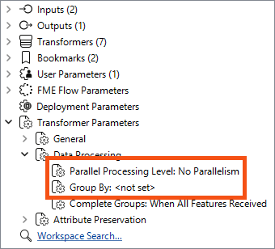
The parameter that controls parallel processing allows different levels of effort to be applied. Each level specifies the number of processes to run simultaneously relative to the number of cores available:
| Parameter | Processes | 2 Cores | 4 Cores | 8 Cores |
|---|---|---|---|---|
| No parallelism | 1 Process | 1 Process | 1 Process | 1 Process |
| Minimal | Cores / 2 | 1 Process | 2 Processes | 4 Process |
| Moderate | Cores x 1 | 2 Processes | 4 Processes | 8 Process |
| Aggressive | Cores x 1.5 | 3 Processes | 6 Processes | 12 Process |
| Extreme | Cores x 2 | 4 Processes | 8 Processes | 16 Process |
As mentioned above, minimal parallelism results in two simultaneous FME processes on a quad-core machine. Extreme parallelism would result in eight (assuming the workspace has eight tasks to process simultaneously).
There is also a hard cap:
| Process Cap | 2 Cores | 4 Cores | 8 Cores |
|---|---|---|---|
| 16 processes | Maximum 4 processes | Max 8 processes | Max 16 processes |
These numbers - we should note - are the maximum number of processes at any one time. It’s possible to divide data into more groups and process them separately, but they won’t coincide. For example, given a quad-core machine, moderate processing, and 20 groups of features, there will be a total of 20 processes, but only four will run at any one time. When one of the four finishes, a new one is started.
The Parallel Process By parameter requires the author to select an attribute, and - as already covered - selecting attributes for a custom transformer parameter requires some consideration.
In particular, you cannot simply pick an attribute to use for this parameter’s value:
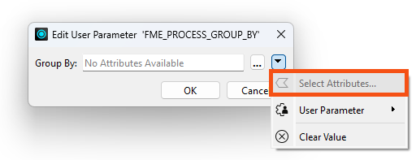
Instead, you can publish this parameter (and one for Complete Groups mode) to make them available as one of the custom transformer parameters:
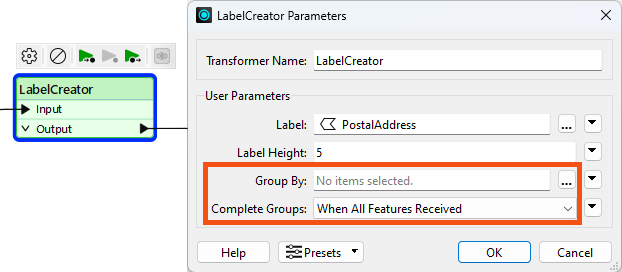
Parallel processing is most effective in two specific scenarios. The first scenario involves a small number of groups, each with a large amount of processing. Parallel processing is less effective when there are many small groups. The second scenario involves many small tasks that the workspace is offloading elsewhere. For example, when the workspace passes features to a web service HTTPCaller transformer, it’s most efficient to have FME fire off as many requests as it can as quickly as possible.
The keys to parallel processing are designing a custom transformer as a standalone subsection and defining the processing groups.
The custom transformer splits features into groups, processes each as a separate action, and then combines them back into a single group on exit.
It’s essential to be aware that features in different groups cannot be related because each group is processed independently. If features are related and their results depend on each other, they must be in the same group.
The easiest way to think of this is that the custom transformer is a Group-Based transformer. Because it is a wrapper for all the individual FME transformers in the definition, it allows them to operate in groups, even if they are Feature-Based.
Learn more about Group-Based and Feature-Based transformers.
Sometimes, the incoming data is unrelated and must be split into arbitrary groups for processing. In these cases, where there is no identifier to define groups, one can be created manually by generating attributes with the ModuloCounter or RandomNumberGenerator transformers.
For example, the author of the workspace below has many address features from which to create labels. To speed up the process, they activate parallel processing:
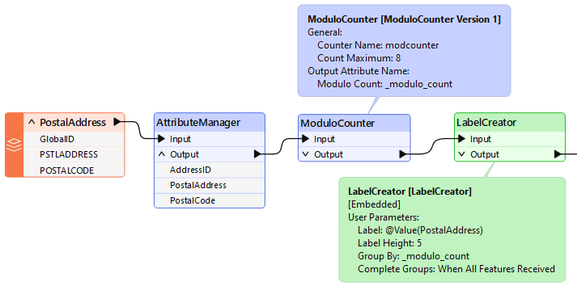
They could group by PostalCode, but chose not to because all addresses fall inside only one of two postal codes. Therefore, they created an artificial group using ModuloCounter. Note that the Group By parameter in the custom transformer is set to the _modulo_count attribute.
In such a scenario, it is best to create only one group per intended FME process. For example, a maximum of eight processes are permitted on a quad-core (four-core) computer with Extreme parallel processing. Therefore, as shown here, the optimum number of groups to use is also eight.

The City wants to incorporate OpenStreetMap data into its spatial datasets and open data portals, and buildings are the first dataset under consideration. Jennifer's colleague has already built a workspace that reads OpenStreetMap building data and writes validation results for each building. Jennifer wants to find out whether parallel processing can make it run more efficiently.
In this exercise, you will:
This workspace validates OpenStreetMap building data against several city datasets. Running it with caching turned on lets you record the baseline record counts, so you can confirm later that your changes do not alter the results.
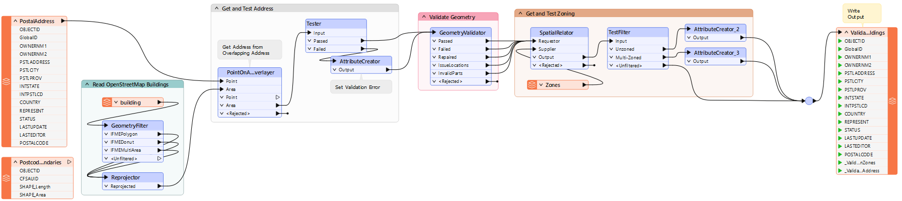
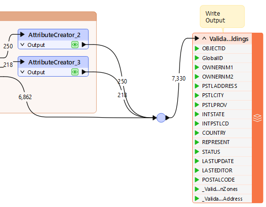
The workspace does not take long to run, but a custom transformer with parallel processing might still improve performance. Parallel processing needs an attribute to group features by, and because OpenStreetMap is crowdsourced, few of its own attributes carry reliable values.
POSTALCODE attribute.
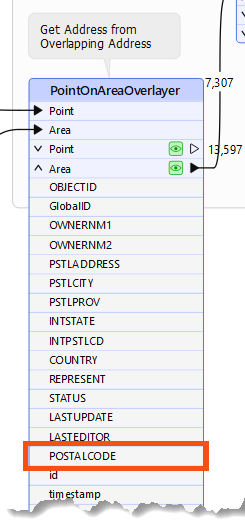
POSTALCODE is obtained, but before the final writer feature type.
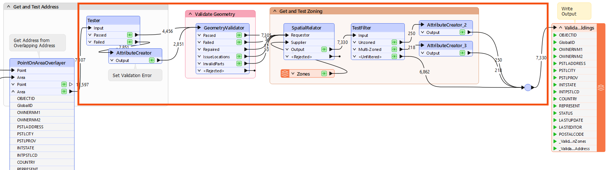
The custom transformer opens in its own tab, where you can check that it holds what you expect. Before parallel processing can split the work, you need an attribute that divides the buildings into a sensible number of groups.
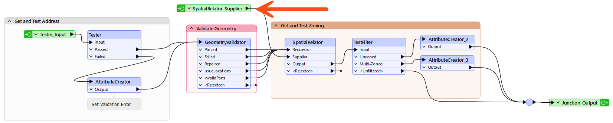
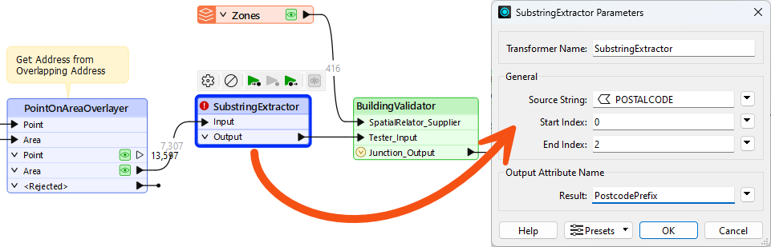
Parallel processing takes two settings in two different places. The level lives in the custom transformer definition and controls how many processes run at once, while Group By lives on the instance in the main workspace and decides which features go to each process.
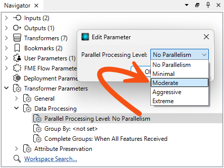
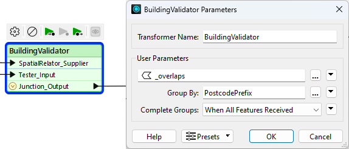
Data caching and breakpoints both stop parallel processing from working, so you have to turn them off before this run. The results will not match your baseline counts, and working out why is the point of this step.
_ValidationZones attribute is set to Unzoned Building.
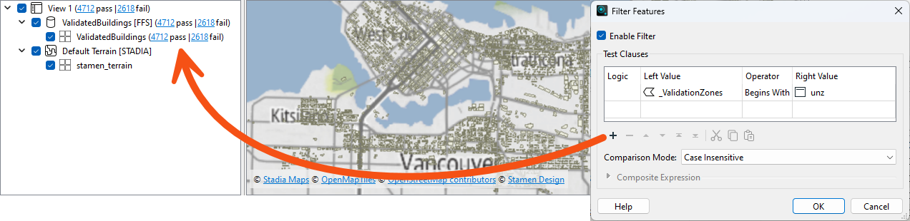
Moving the zoning data inside the custom transformer means every parallel process reads its own copy, so no process is missing the zones it needs. A FeatureReader can sit inside a definition where a reader feature type cannot.
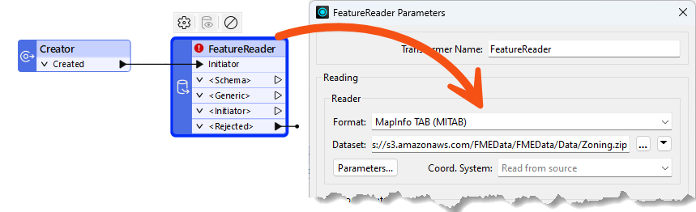
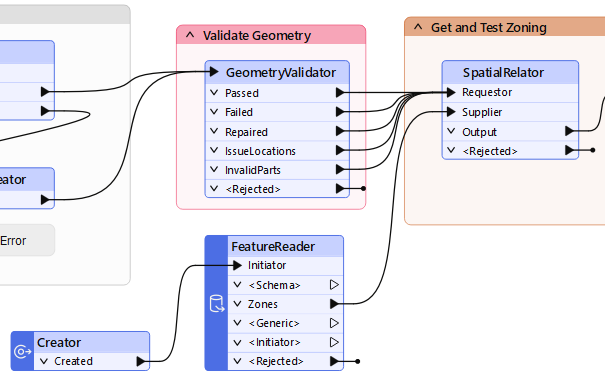
_ValidationZones value of Unzoned building and 218 have a value of Overlapping zones building.
The workspace already ran fast before you started, so the need for parallel processing was low from the outset. Parallel processing repays careful consideration and benchmarking, and this step is where you decide whether the setup was worth it.